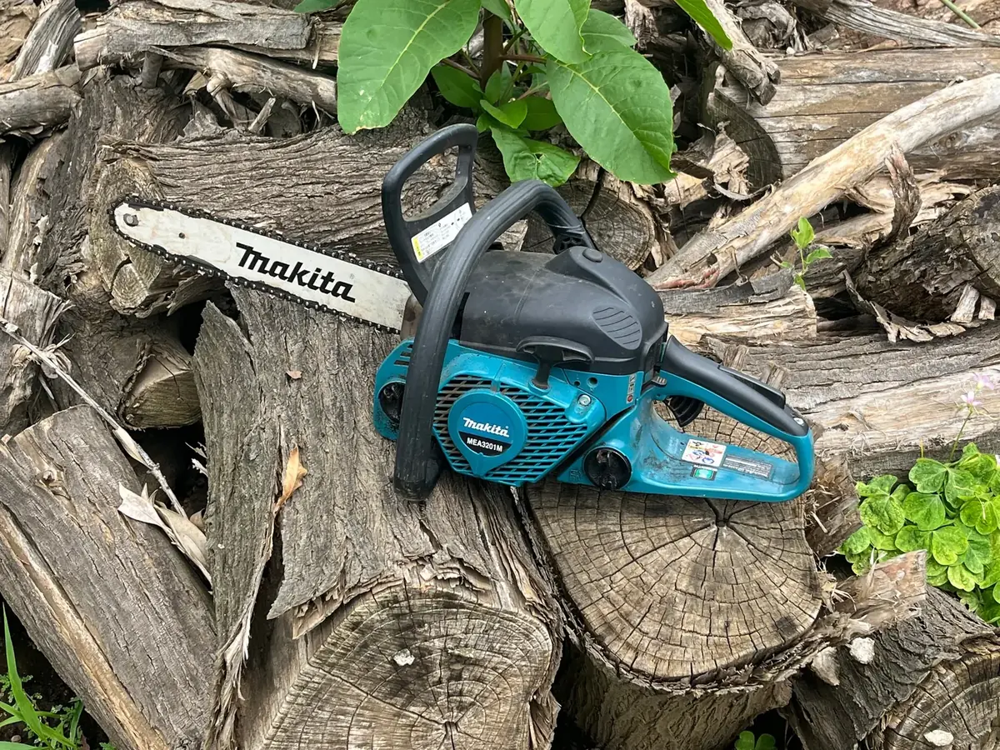

伐採作業
庭木を切り倒し、管理しやすい状態にします。
- 1〜2m3,000円〜
- 2〜3m6,000円〜
- 3〜4m9,000円〜
- 4〜5m12,000円〜
- 5〜6m15,000円〜
- 7m以上20,000円〜
川越市の伐採・伐根
手入れが難しくなった庭木や、今後管理する予定のない木を伐採します。根まで取り除きたい場合は伐根にも対応しています。

庭木の高さを基準にした最低料金です。作業条件によっては現地確認後のお見積りとなります。
庭木を切り倒し、管理しやすい状態にします。
切った木の根を取り除き、再び芽が出る可能性を低くします。
木をなくして地上部分だけ整理したい場合は伐採、今後同じ場所へ植栽したい場合や芽吹きを抑えたい場合は伐根が候補になります。
費用を抑えて、まず庭木の管理負担をなくしたい場合。
根まで取り除いて土地を使いやすくしたい場合。
作業スペースや周囲の状況によります。チェーンソーが根元まで入らない場合は少し高さを残すことがあります。
可能です。丸太などは事業所で処分できるため、伐採時の処分費を調整できる場合があります。
地中配管や構造物の位置によっては安全上難しい場合があります。現地確認後にご案内します。
正式な料金は、作業条件や必要に応じた現地確認のうえで分かりやすくご案内します。